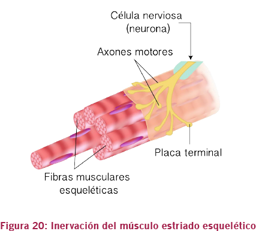
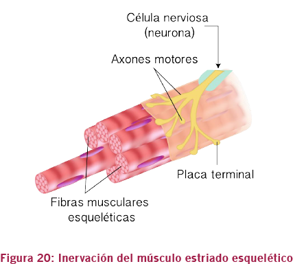

01. Anatomía y Fisiología
C. Sistema muscular
La fibra muscular está inervada por una terminación nerviosa que transmite el estímulo nervioso a la contracción y distensión de cada una de esas células, haciendo con que todo el músculo responda al estímulo venido desde el cerebro para un movimiento voluntario.
El movimiento voluntario se denomina así porque tenemos conciencia de su realización ya que es nuestra voluntad, nuestro deseo que lo ordena.
Para que este movimiento voluntario suceda, una parte compleja del sistema nervioso se activa, controlando principalmente los músculos estriados esqueléticos y haciendo que el cuerpo responda a estímulos del medio externo.
 
